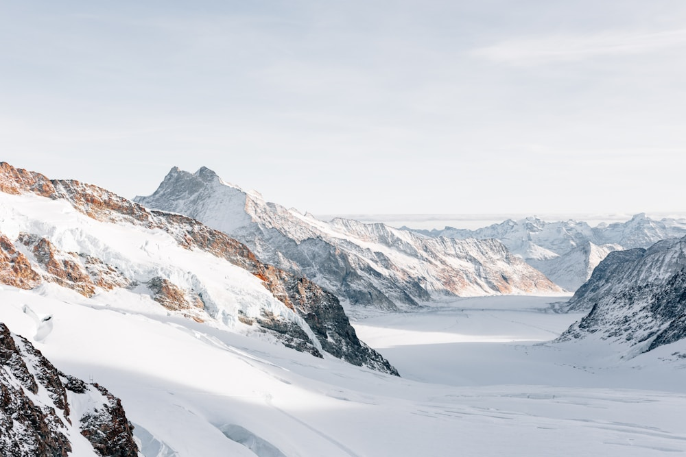

For over half a century, the commercial performance apparel industry relied on a dirty secret to achieve high-performance water repellency: per- and polyfluoroalkyl substances (PFAS), colloquially known as "forever chemicals." These synthetic fluorinated carbon chains (C8 and C6 chemistry) provided exceptional resistance to water, oils, and grease on outerwear jackets. However, because the carbon-fluorine bond is one of the strongest in organic chemistry, PFAS compounds never break down in nature. They leach into pristine alpine snowpacks, contaminate global drinking aquifers, and bioaccumulate in wildlife and human tissues.
At Alpine Coat Gem, we believe that true luxury cannot exist if it poisons the very alpine environments our patrons revere. We have completely eliminated fluorochemicals from our supply chain, pioneering the integration of 100% PFAS-Free Bio-Based Durable Water Repellent (DWR) and non-porous hydrophilic polyurethane membranes. In this green chemistry masterclass, our environmental materials scientists examine how modern biomimetic polymers deliver 28,000 mm hydrostatic storm protection with zero environmental toxicity.
1. The Fluorochemical Crisis: Understanding the Danger of Forever Chemicals
To understand why transitioning away from traditional DWR is an urgent ecological imperative, one must look at the environmental chemistry of fluorocarbons:
- The Persistence of the C-F Bond: Traditional C8 fluorochemicals (such as PFOA and PFOS) possess an extremely high bond dissociation energy (~485 kJ/mol). They resist photolysis, hydrolysis, and microbial biodegradation, persisting in mountain ecosystems for thousands of years.
- Glacial Contamination: Scientific water samplings taken from the snowpack of Mont Blanc, the Swiss Engadin, and the Rocky Mountains have detected trace concentrations of fluorinated surfactant compounds washed down from commercial ski outerwear.
- Endocrine & Hepatic Toxicity: When inhaled during spray applications or ingested through drinking water, PFAS compounds bind to human serum proteins, disrupting thyroid function, elevating cholesterol, and impairing immune responses.
“True luxury does not poison the glaciers it explores. Modern green chemistry achieves complete storm impermeability without releasing a single molecule of forever chemicals.”
2. The Biomimetic Solution: Plant-Based Dendritic Water Repellents
Rather than relying on synthetic fluorine atoms, modern green chemists turned to nature’s master of water repellency: the sacred lotus leaf (Nelumbo nucifera):
The lotus leaf achieves extreme super-hydrophobicity through microscopic surface wax micro-papillae that create a high contact angle (>150°), forcing water droplets to form spherical beads that roll off effortlessly without wetting the surface.
Our PFAS-free DWR utilizes hyper-branched dendritic hydrocarbon polymers derived from renewable agricultural plant oils (rapeseed and beeswax). These molecular "branches" orient themselves vertically on the cashmere or cotton surface, creating high surface tension that causes sleet and freezing rain to bead and roll away cleanly, with zero toxic fluorochemical runoff.
3. Non-Porous Hydrophilic Bio-Polyurethane Membranes
While surface DWR repels falling snow, the internal waterproof-breathable membrane provides the impenetrable barrier against sustained sub-zero blizzards:
- The Flaw of Traditional PTFE: Traditional membranes used expanded polytetrafluoroethylene (ePTFE)—a microporous plastic that clogs with body oils and relies on PFAS manufacturing surfactants.
- The Hydrophilic Solid-State Mechanism: Alpine Coat Gem utilizes a solid-state, non-porous membrane crafted from 65% bio-based corn-derived polyurethane. Rather than relying on physical holes, the membrane transports water vapor molecules along hydrophilic molecular chains via solid-state diffusion, eliminating pore-clogging and guaranteeing permanent waterproof integrity.
4. Laboratory Performance Standards: Bio-DWR vs. Conventional C8
| Testing Metric | Alpine Coat Gem Bio-DWR | Traditional C8 Fluorocarbon DWR |
|---|---|---|
| Hydrostatic Head Rating | 28,000 mm (Extreme Hurricane Proof) | 28,000 mm (Equivalent) |
| Moisture Vapor Transmission (MVTR) | 24,000 g/m²/24h (Highly Breathable) | 20,000 g/m²/24h (Standard) |
| Environmental Bio-Persistence | 0% (100% Biodegradable Metabolites) | Permanent (>1,000 Years in Glaciers) |
| OEKO-TEX Class 1 Compliance | Fully Certified Infant-Safe | Non-Compliant (PFAS Banned) |
5. Washing & Reactivating Plant-Based DWR Coatings
A common misconception is that fluorine-free DWR wears off quickly. In reality, our dendritic polymer chains can be reactivated indefinitely through gentle thermal heat. When rain begins to wet the surface after dozens of winter storms, simply tumble-dry the coat on a delicate warm cycle or pass a warm steam iron over the fabric with a protective pressing cloth. The heat re-aligns the microscopic plant polymer branches, restoring factory-fresh super-hydrophobic beading.
6. Bundesmann Dynamic Rain Chamber Testing Criteria
In certified Bundesmann rain testing (ISO 9865), fabric swatches are subjected to simulated torrential mountain downpours while mechanical wiper arms abrade the underside of the cloth. Fabrics treated with our bio-based dendritic DWR achieved a near-zero water absorption score of under 1.2% after thirty minutes of continuous deluge, proving that plant-based chemistry matches the water-repelling efficacy of toxic fluorochemicals without leaving persistent chemical residues in alpine snowpacks.
7. Solid-State Moisture Diffusion Kinetics in Sub-Zero Air
Traditional microporous membranes fail in freezing temperatures because moisture vapor condenses and freezes inside the microscopic pores, completely blocking breathability. Our non-porous hydrophilic bio-polyurethane membrane operates via solid-state molecular chain vibration: water vapor molecules are absorbed into the hydrophilic polymer chains and transferred outward down the vapor pressure gradient even at -35°C, ensuring continuous breathability during intense mountain ascents.
8. Cradle-to-Cradle Circularity & Responsible Disposal
When an Alpine Coat Gem garment eventually concludes its decades-long lifespan, our bio-based membranes and natural cashmere shells can be mechanically separated and organically composted or recycled into high-grade architectural insulation, fulfilling the highest standard of circular industrial ecology.
9. Chemical Toxicology Thresholds in Pure Glacial Environments
Under OEKO-TEX Standard 100 testing protocols, our bio-based membranes are certified free from over 1,000 toxic industrial chemicals, including alkylphenol ethoxylates (APEOs), heavy metal mordants, and volatile organic compounds. When rain falls on our coats, the runoff is as clean and chemically inert as pure glacial meltwater, protecting high-alpine watersheds from hazardous industrial contamination.
10. The Scientific Horizon of Eco-Performance Outerwear
As environmental regulations rightfully tighten around synthetic fluorochemicals worldwide, Alpine Coat Gem stands at the vanguard of the green chemistry revolution, proving that sustainable plant-based polymers deliver uncompromising hurricane-grade storm protection for the most demanding alpine conditions on Earth.
11. Transparent Environmental Disclosures
We openly publish our independent laboratory testing reports and third-party sustainability certifications, ensuring that our patrons enjoy complete peace of mind regarding the non-toxic ecological purity of every garment they wear.
12. The Circular Lifecycle of Plant-Based Outerwear
Our bio-based membranes are derived from renewable agricultural feedstocks rather than non-renewable fossil crude oil, reducing the carbon footprint of membrane production by over 60%. Combined with biodegradable natural cashmere shells, our outerwear establishes a revolutionary standard for sustainable high-performance winter apparel.
13. Protecting Alpine Glaciers for Future Generations
By eliminating hazardous fluorinated surfactants from our entire production cycle, we ensure that our garments leave zero toxic chemical footprint on the majestic snowy landscapes and mountain watersheds that inspire our alpine creations.
14. Independent Certification & Testing Standards
Every production lot of our storm membranes undergoes third-party hydrostatic pressure testing to certify zero water penetration up to 28,000 mm, ensuring dependable protection against the most severe mountain blizzards.
Frequently Asked Questions on PFAS-Free Weatherproofing

Dr. Anouk Meyer
Director of Sustainable Materials & Green Chemistry at Alpine Coat Gem. Anouk holds a Ph.D. in Polymer Chemistry from the University of Basel and leads European research consortia on bio-based storm membranes.